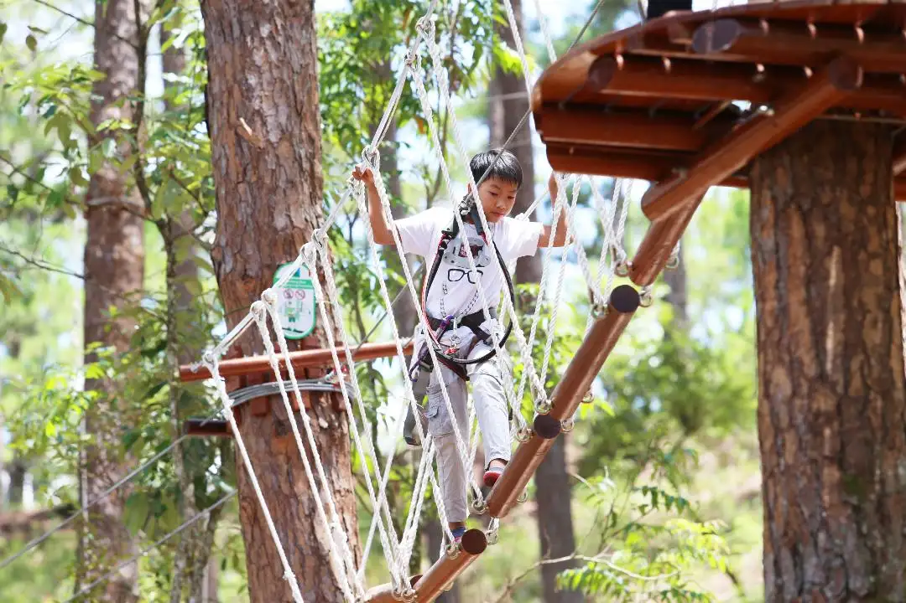

Đà Lạt
Trò chơi đu dây mạo hiểm Datanla và Trượt Zipline tại Đà Lạt
Bay qua khu rừng ở độ cao 15m

Có một ngày vui chơi tuyệt vời với các hoạt động ngoài trời thú vị
Bạn sẽ trải nghiệm
-
Trải nghiệm đu dây trên cao được thiết kế để vừa thử thách thể chất
vừa kích thích tinh thần khi bạn đối mặt với các yếu tố như zipline,
cầu dây và các chướng ngại vật trên không khác
-
Yên tâm chơi hết mình vì luôn có thiết bị bảo hộ chuyên nghiệp và
hướng dẫn viên được đào tạo để hỗ trợ bạn trong suốt hành trình
-
Tham gia thử thách thể chất giữa khung cảnh tuyệt đẹp, biến thời gian
của bạn ở đây vừa là một cuộc phiêu lưu ly kỳ vừa là một trải nghiệm
ngắm cảnh tuyệt đẹp
-
Cùng con bạn chơi đùa với các trò chơi được thiết kế riêng cho trẻ em
Nếu bạn là người thích phiêu lưu thì đây chính xác là điều bạn đang
tìm kiếm khi ghé thăm Đà Lạt.
-
Nhiều thử thách khác nhau: Đu dây mạo hiểm đưa ra nhiều thử
thách và chướng ngại vật phù hợp với các cấp độ kỹ năng khác nhau. Thử
thách bản thân với 80 trò chơi khác nhau, được chia thành 10 vòng chơi
với các độ khó dễ, trung bình, và khó để bạn lựa chọn. Đặc biệt, bạn
sẽ có dịp thử thách bản thân với đường trượt zipline và trò nhảy cao
15 m đầy phấn khích.
-
Hướng dẫn chuyên nghiệp: Hướng dẫn viên được đào tạo và có kinh
nghiệm luôn sẵn sàng hỗ trợ bạn trong suốt hành trình. Nhân viên sẽ
cung cấp các hướng dẫn an toàn, cách vượt qua chướng ngại vật và đảm
bảo rằng mọi người đều tuân theo các quy trình an toàn phù hợp. Điều
này nâng cao trải nghiệm tổng thể và giúp những cá nhân có mức độ trải
nghiệm phiêu lưu khác nhau có thể tiếp cận được với các thử thách.
-
Thân thiện với gia đình: Đu dây mạo hiểm Datanla và Zipline
được coi là điểm thu hút dành cho gia đình. Mặc dù mang đến những
thách thức cho những người tìm kiếm cảm giác mạnh nhưng những hoạt
động này cũng được thiết kế để phù hợp với gia đình và nhóm bạn. Đây
có thể là một cách tuyệt vời để gia đình gắn kết hơn trong khi cùng
nhau tận hưởng chuyến phiêu lưu ngoài trời.
Thông tin chung
| Giá vé |
Từ 437.500 VND. |
| Giờ mở cửa |
08:00-16:00. |
| Địa chỉ |
Khu Du Lịch Thác Datanla QL20 Đèo Prenn, Phường 3, TP. Đà Lạt.
|
Tour săn mây và đón bình minh tại Đà Lạt